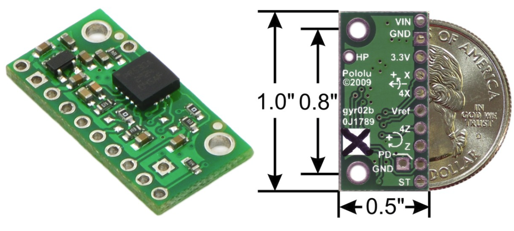

SE 423 Mechatronics
Laboratory Assignment #5
DC Motor PI Speed Control and Robot Steering
One Week Lab
TA Check-Offs in this document: 7 (marked “TA Check-Off” in the text and listed at the end)
First start out by creating a new project using LABstarter and rename in LAB5<yourinitials>. Then merge the ADCC code from Lab 4 into this labstarter. There are two ways you can accomplish this. One way would be to go through Lab 4’s Exercise 3 code and copy all the parts needed for sampling ADCC’s four gyro channels every 1ms. The second way would be to copy the entire Lab 4 C file and paste over all the code for this new Lab 5 labstarter. Then you would need to go through this pasted code and remove all the code associated with ADCD (function generator) and ADCB (microphone). Either way you choose, take your time and go through your C code and make sure you have included all parts to sample ADCC channels C2, C3, C4 and C5 and have removed all the parts for ADCB and ADCD. Before you go on to Exercise 2, make sure to run this code and make sure it is working to sample the four ADCC channels every 1ms. Print every 100ms to the robot’s text LCD the degrees/second readings of ADCINC2, ADCINC3, ADCINC4 and ADCINC5 after their respective “zeros” have been subtracted from the readings. Use the below item list to remind you what should be included: (All items are not necessarily listed here. Add other steps as needed.)
Remember in main() that you need to initialize:
Demo your code working to your TA.
Exercise 2 is also a code merging exercise that will add all the PWM motor driving and optical encoder velocity calculations we performed in Lab 3. This code merge should be a bit easier as we do not have to worry about new interrupt functions.
In Lab 3, you setup one of the CPU Timers to call its interrupt function every 1ms. In this lab I would like you to use the ADCC’s ISR function instead which is already being called every 1ms. Copy all the code you wrote in Lab 3 that was called every 1 ms in the CPU Timer into your ADCC_ISR function. The ADCC_ISR code should be close to the following order: (again I may not list every step here, you add as needed)
Then from 4 seconds on
Compile and run your code. Using the third encoder dial in different commands and make sure the robot wheels spin in the correct direction and the velocities displayed are the correct units.
Show this working to your TA.
Partners switch so that the other person can do some codding.
In this exercise you will implement the decoupled PI controller shown in Figure 1. NOTE here that we will change the function of Encoder 3. Instead of being used to set uLeft and uRight directly as in exercise 2, the value read from encoder 3 will set the “desired velocity” shown in Figure 1. From here forward we will call this desired velocity “Vref” (Velocity Reference). uLeft and uRight will be set to the PI control equation. For example, uLeft = Kp*errKLeft + Ki*IKLeft.
Before going onto step 2, observe integral windup. Start your code, but leave the motor amplifier off. Dial in a Vref of 1 foot/second and after a few seconds turn on the amp. The wheels should take off spinning at maximum speed. After a few seconds the wheels will die back down to the desired speed. To see what is happening add your IKLeft and IKRight floating point variables along with uLeft and uRight to Code Composer Studio’s Watch Expressions window.
What happens to IKLeft and IKRight the longer you wait to turn on the motor amp? Demo this to your TA.
Build and run your code. Test the robot on your bench. When you change the desired speed, Vref, by rotating encoder 3, the robot’s wheel velocity should, after a small transient, match the desired speed. Check that you have corrected the integral windup issue for both positive and negative Vref set points. Tune the Ki gain to see if you can achieve a quicker transient response in motor speed. Try 15.0 then 25.0.
Demo this working to your TA.
Build and run your code. Grab one of the wheels and see what happens to the wheels on the opposite side.
Demo this working to your TA.
Build and Flash your code to your robot. First run your code on the cake pan at your bench to see that it is working to steer the robot. Then when you know it is working, disconnect the cables to the robot and put it on the floor and power it with a battery. Power on the robot and after four seconds enable the motor amp. Your robot should start going forward at 1 foot/second. Use the encoder wheel to dial in turn values that make the robot steer around its environment.
Demo this working to your TA.

4Z(ADCINC4) and 4X(ADCINC3) (4 here means 4 times the accuracy) Voltage Range 0.23V -1000/s, 1.23V 00/s, 2.23V 1000/s
Z(ADCINC5) and X(ADCINC2) Voltage Range 0.23V -4000/s, 1.23V 00/s, 2.23V 4000/s
Build and Run your code. Turn the robot in place back and forth and check that your calculated angles make sense. For example, turn the robot approximately 90 degrees and see that the bearing angle is close to 1.57 radians. Do you notice any difference between the two gyro resolutions? Do you notice a drift in the calculation of the bearing over time? Sit the robot still and watch the rate the bearing drifts from zero.
Demonstrate that you can integrate the LPR510’s Z gyro axis to find the robot’s bearing. Do you notice a drift in the integral?
Tick each box once your TA or instructor has checked you off.
Make sure that you comment you code and put your initials in your Gradescope submission! See https://marius-juston.github.io/SE-423---Class-Material/Homeworks/commenting_code_example.pdf for how we expect the code to be commented like!